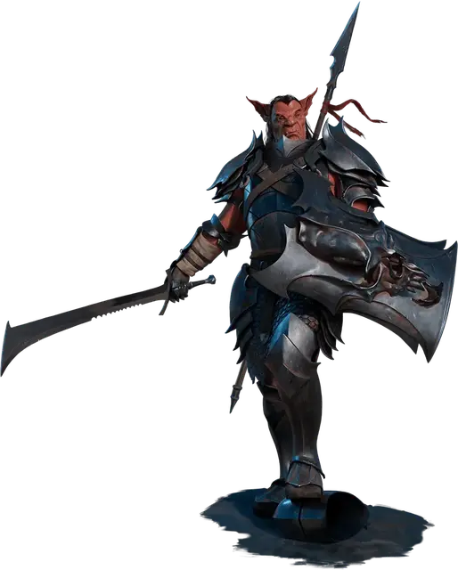

Хобгоблин военачальник
Hobgoblin Warlord
Средний Гуманоид (Гоблиноид), законно-злой

Класс Доспеха 20 (латный доспех, щит)
Хиты 97 (13к8 + 39)
Скорость 30 футов
| мод | спас | ||
|---|---|---|---|
| СИЛ | 16 | +3 | +3 |
| ЛОВ | 14 | +2 | +2 |
| ТЕЛ | 16 | +3 | +3 |
| мод | спас | ||
|---|---|---|---|
| ИНТ | 14 | +2 | +5 |
| МДР | 11 | +0 | +3 |
| ХАР | 15 | +2 | +5 |
Чувства тёмное зрение 60 футов, пассивное Восприятие 10
Языки Общий, Гоблинский
Опасность 6 (2300 опыта)
Бонус мастерства +3
Среда обитания Лес, Луг, Пустыня, Подземье, Холмы
Особенности
Воинское превосходство. Один раз в ход хобгоблин может причинить дополнительный урон 14 (4к6) существу, по которому он попал атакой оружием, если это существо находится в пределах 5 футов от дееспособного союзника хобгоблина.
Действия
Мультиатака. Хобгоблин совершает три рукопашные атаки. В качестве альтернативы, он может совершить две дальнобойные атаки метательными копьями.
Длинный меч. Рукопашная атака оружием: +9 к попаданию, досягаемость 5 футов, одна цель. Попадание: Рубящий урон 7 (1к8 + 3), или рубящий урон 8 (1к10 + 3), если используется двумя руками.
Удар щитом. Рукопашная атака оружием: +9 к попаданию, досягаемость 5 футов, одно существо. Попадание: Дробящий урон 5 (1к4 + 3). Если размер цели не больше Большого, она должна преуспеть в спасброске Силы Сл 14, иначе будет сбита с ног.
Метательное копье. Рукопашная или дальнобойная атака оружием: +9 к попаданию, досягаемость 5 футов или дистанция 30/120 футов, одна цель. Попадание: Колющий урон 6 (1к6 + 3).
Лидерство (перезаряжается после короткого или продолжительного отдыха). В течение 1 минуты хобгоблин может отдавать особые приказы и предупреждения, когда невраждебные существа, видимые им в пределах 30 футов, совершают бросок атаки или спасбросок. Это существо может добавить к4 к своему броску, если слышит и понимает хобгоблина. Существо может получать выгоду только от одного Лидерства одновременно. Этот эффект оканчивается, если хобгоблин становится недееспособным.
Реакции
Парирование. Хобгоблин добавляет 3 к КД против одной рукопашной атаки, которая должна попасть по нему. Для этого хобгоблин должен видеть атакующего, и должен использовать рукопашное оружие.
Описание
См. дополнительно статью: "Бестиарий: Хобгоблины"